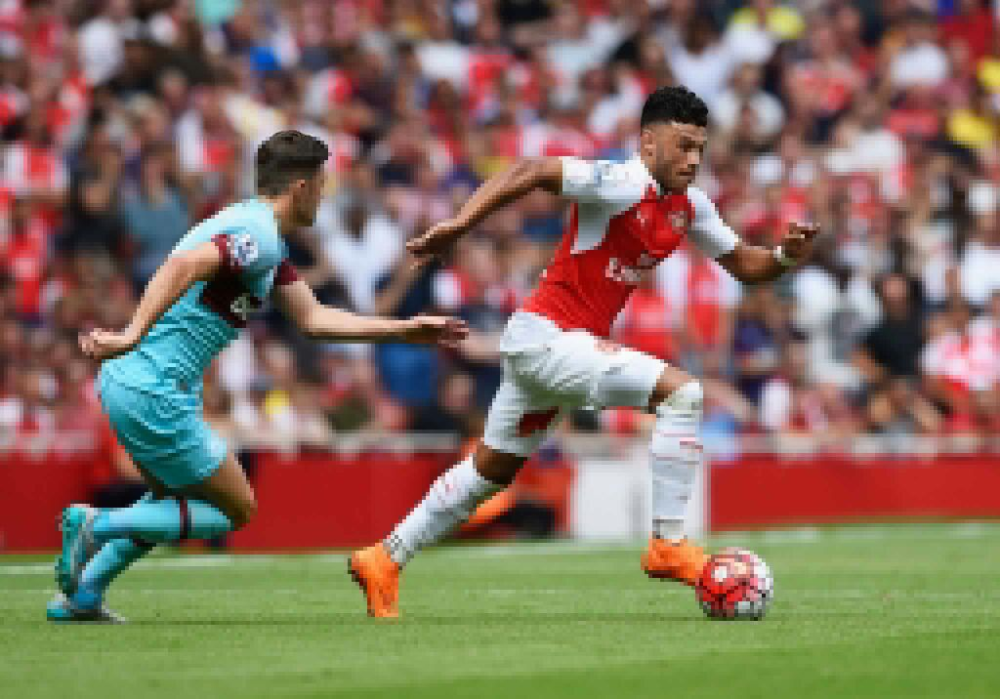
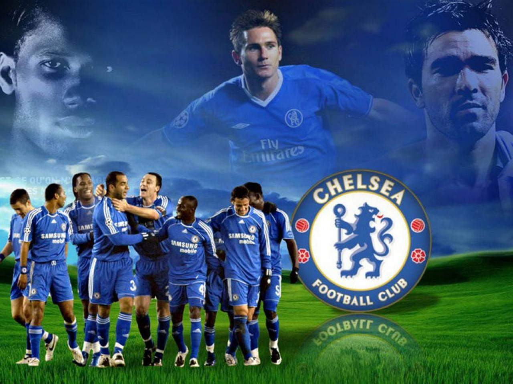
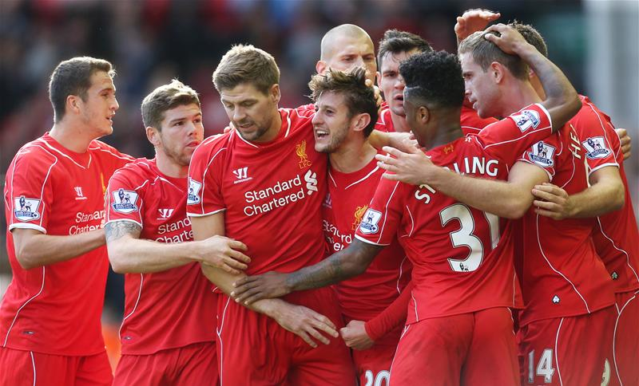
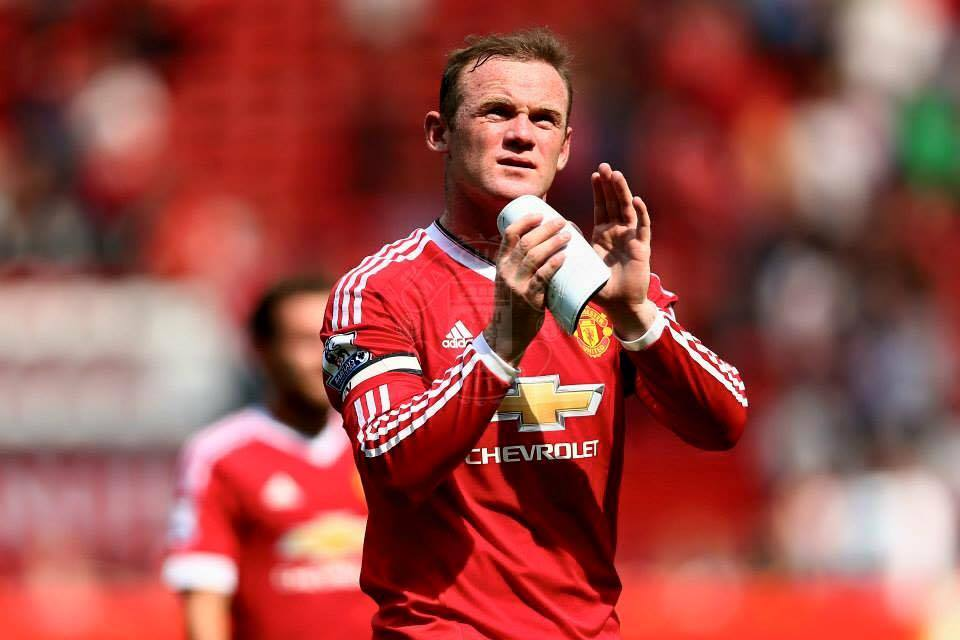
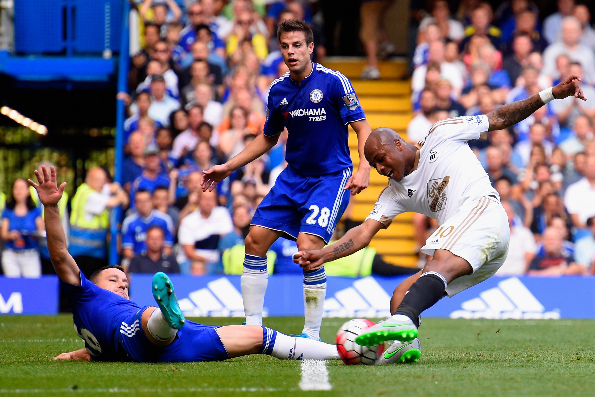

Overview
So the longest 3 months for the premier league was over this weekend. The fairytale start for some team and nightmares for some other was the talking point of this gameweek. So here we are with a look at each team's performance and their next moves.
A.F.C Bournemouth
So the promoted side ended up on the losing side against a new look Aston Villa team but there were a lot of positives to take. Good attaking sides chances being created are excellent just the final finishing is the thing which is being missed dearly. Early days so there are more tough teams to face so got to buck up quickly to the new surroundings.
Arsenal
The worst start Arsenal would have ever imagined after the success over defending champ Chelsea in the Community Shield. The 2-0 loss just showed that they have a lot of departments to work on. Cech might just have to regain his prime and defenders too have to do a better marking.Attack was good copared to the defense but a poacher is what the team needs right now.
Aston Villa
3 Points in the bag already.But still they have to face stronger opponents so attack needs to be ore precise.with the good form of Guzan it's pretty much tough for opponent to sore past him.The new team has to bring in the co ordination eve faster as the premier league has started too soon.
Chelsea
So the defending champions were very strong on the attacks and counter attack but maybe they just lost their greatest strength "THE BUS" which was very well exploited by shelvey and company who scored two past them. Although the red card and the penalty issue was a bit harsh still then you just can't forgive the mistakes made by terry with Manchester City knocking at the door it would be intersting to see "special one's" tatis and changes. 
Crystal Palace
The form from the end of the last season has continued....Puncheon the most creative player for them last season did create chances which were taken well by his team mates...New signing Cabaye did not dissapoint the new fans too..the team looks good for the future.
Everton
They did share the points with Watford but oh my boy the match was by far the most entertaing match of the week..drama,action and comeback.although they conceeded too early but fought back to make it level.Ross Barkley's form is an onus for the team but defense need to tighten up soon.
Leichester City
The best way the new manager could have dreamt of debuting..Maharez sored two with Albrighton assisting twice showed their attack is as strong as it was in the latter half of the previous season..switched off their defense in the second half which allowed Sunderland to save their pride.
Liverpool
So everyone did expect to see what the new signings had in store for the team.With a new captain in Henderson the team looked quiet average with no lot of chances being created.A lot will be expected of Benteke while Coutinho has already shown his class.A win to start for the new look team might be a boost for them.
Manchester City
The best start for the contender.3-0 win with a boost as ain man Yaya Toure did come in form and the tea looked too stable and attacking.with City aiming to sign De Bruyne it would be great to see how the tea keeps attaking against the big guns.
Manchester United
The first win for them via own goal was not the idle start Van Gaal would have expected of his strong team.Although a lot of plus point from the match were there for them..The first being Darmian who was the best layer of the match with Mephis playing well too.Let's see how do they now take up much weaker teas as compared to Spurs.
Newcastle United
A well fought draw against Southampton which was really well applauded by the crowd was the way Newcastle began their journey this season.Newcastle promise to be infinitely more attractive to watch than last season, with Georginio Wijnaldum and Chancel Mbemba looking very good signings. Less positively, Fabricio Coloccini was, not for the first time, far from convincing, while Aleksander Mitrovic appears to be a young man potentially in need of Alan Pardew\rquote s old anger management counsellor.The passing was of a bit high order and intelligent which is the plus point they can take from the first gameweek.
Norwich City
Promoted club do find it tough to adapt to the tougher Premier league..And it was exatly the same case for the Canaries who found it tough to face the prolific attack of Crystal Palace.Yeah they could complain of the big decisions that went against them but you just can't take away the success from Crystal.Attack and defense both need to buck up to prevent relegation zone finish.
Southampton
Pelle and Long were on the scoresheet for the saints as they drew level with Newcastle.The attack was stupendous which was greatly shown by a glancing header from Pelle.What they have to guard against is the counter attacks which might tear their defense apart.
Stoke City
It might had been a great weekend for them had Coutinho hadn' delivered the stunner to seal it for Liverpool.the defense was quite good with midfield playing a bit of a holding game.They might just be stronger then ever with the arrival of Shaqiri.
Sunderland
A real poor show which could had been even worse ha they didn't score the 2 goals near the end of the match.They were just clueless against the attacks which shows the department they have to work upon before the season gets tougher for them.
Swansea City
< p>The best team of 2015 did find it real hard to deal with the attacks of Swansea..Shelvey did provide lot of good passes in the area,playing deep balls.Had Gomis didn't miss the one on one chance it had been a different story altogether.Defense wasn't totally at it's best but they should be pretty happy with the performance they showed.  The Unsung heroes of the first gameweek.Tottenham Hotspurs
Yeah they lost in what can be said one of the most boring match of the weekend.The tea looks too dependent on Kane and Eriksen which is not a good sign at all considering the fact they do have a quality mid.Never mind they an just take this defeat as a inspiration to grow better as eague progresses.
Watford
The best surprise team of the promoted clubs.Their game was a treat to watch as captain Deeney led the team to respectful 2-2 draw against Everton.The attack looks the strength of the team but defense needs to work up on.the team as a whole looks promising enough to struggle hard for surviva in premier league.
West Bromwich Albion
Well you don't expect to start well enough when you face an attacking Manchester City.With likes of Lescott,Lambert,Berhaino and Fletcher we expect them to come out all guns blazzing against the next opponents.
West Ham United
All thanks Cech West Ham went of to a flyer by winning against favourites Arsenal.Although Arsenal played quite aggresively but West Ham did manage to somehow avoid it.With confidence on sky high we do hope the level of theirs to increase.